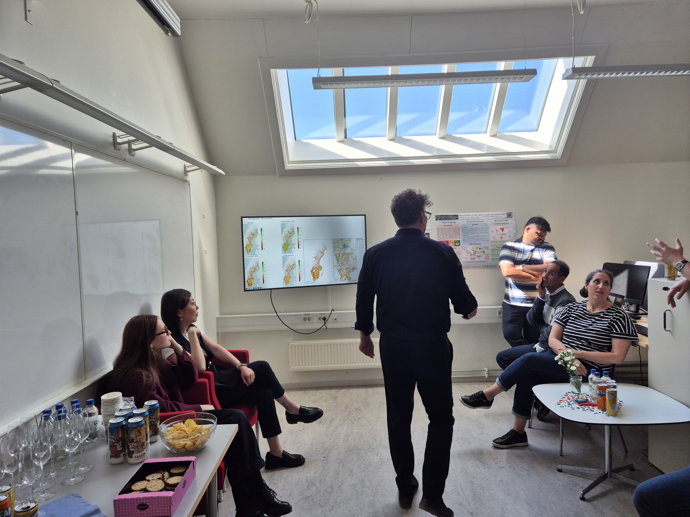

{kind=link}
{kind=link}
{kind=link}
{kind=link}
{kind=link}
{kind=link}
{kind=link}
{kind=link}
5 May 2026
The lab is open.
The Hägerstrand Lab held its inauguration in Room 42 on 5 May 2026. Thanks to everyone who came, presented, and stayed for cake. Photos and a short recap are in the section above.
See the recap →A newly founded research infrastructure at the Department of Human Geography, established to bring data, code, and ideas into proximity with the fundamental questions of human geography.
The Hägerstrand Lab is a research environment at the Department of Human Geography where computational approaches are developed, discussed, and put into practice. It brings together researchers, students, data, code, and infrastructure in one shared space.
The lab supports work across human geography and computational social science — from spatial data analysis and machine learning to visualization, simulation, and digital mapping. Some projects are highly technical, others more exploratory. What matters is a willingness to work computationally with geographical questions.
The lab does not follow a narrow definition of what "computational" should mean. Different methods, tools, and traditions coexist here: programming, GIS, statistics, visualization, modeling, qualitative–quantitative work, and experimental forms of inquiry.
Rather than enforcing a single approach, the lab is intended as a place where people with different competences can encounter each other's work, exchange ideas, and collaborate across boundaries.
The lab is named after Torsten Hägerstrand, whose work at Lund University reshaped human geography through ideas about space, time, mobility, and everyday life. His time-geography described how human activity unfolds through paths, constraints, and interactions across space and time.
Many of those ideas now intersect naturally with contemporary computational methods: mobility data, spatial simulation, agent-based models, and large-scale geographical analysis. The name reflects both an intellectual inheritance and a continuing curiosity about how computational methods can deepen geographical understanding.
At its core, the lab brings together people with computational competences and an interest in them. That central purpose radiates outward into several interconnected activities:
The shared purpose that connects all lab activities
A forum for dialogue across methodological and disciplinary boundaries.
Bringing together information, resources, and shared reference materials.
From code and visualizations to reports and spatial artifacts.
Access to and support for high-performance computing infrastructure.
Bridging graduate learning and active research practice.
A fixed point for visiting scholars and short-term collaborators.
The inauguration marked the opening of the Hägerstrand Lab as a new research environment within the Department of Human Geography, with support and recognition from both the department and the Faculty of Social Sciences. The afternoon brought together colleagues and guests for conversation, fika, and a series of welcoming speeches. Henrik Gutzon Larsen reflected on the intellectual legacy of Torsten Hägerstrand and its continued relevance for contemporary geographical research, alongside welcoming words by Ola Hall, Markus Grillitsch, and Philipp Stark.
Read the invitation (PDF) →
Click any image to enlarge.
The Hägerstrand Lab held its inauguration in Room 42 on 5 May 2026. Thanks to everyone who came, presented, and stayed for cake. Photos and a short recap are in the section above.
See the recap →Room 42 · 4th floor
KEG, Geocentrum I
Sölvegatan 10, 223 62 Lund
Sweden
Formerly Room 426 — the 6 has gone missing.
For questions, visits, collaborations, or to join an event:
The lab welcomes researchers, students, and visitors from inside and outside the department.